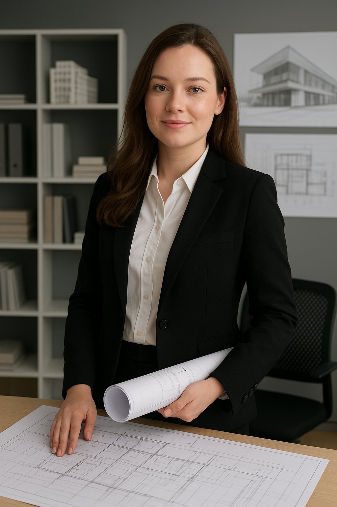

Skole
Jeg går i tredje klasse på Nadderud videregående skole, og jeg trives veldig godt der. Skolen har et godt miljø, og jeg har fått mange fine venner gjennom årene. Jeg liker fagene mine og synes lærerne er flinke og engasjerte.
Hvilke fag jeg har:
- - R2 matte
- - Fysikk 2
- - IT 1
- - Norsk
- - Historie
- - Religion og etikk
- - Kroppsøving
Om fagene mine:
Jeg er veldig fornøyd med fagene mine og timeplanen min. Jeg har bare realfag som programfag, og selv om det kan være ganske utfordrende, føler jeg at de passer godt for meg. Favorittfaget mitt er matematikk, fordi jeg liker at det er logisk og rett frem. Jeg liker også IT veldig godt, siden det gir mer rom for kreativitet. Fysikk synes jeg er det vanskeligste faget, men jeg prøver å gjøre mitt beste. Fellesfagene er helt greie, og jeg trives godt med lærerne jeg har.
Min timeplan:
| Timer: | Mandag | Tirsdag | Onsdag | Torsdag | Fredag |
| 08.15 - 09.50 | IT 1 | R2 | Fysikk 2 | Kroppsøving | |
| 10.00 - 11.35 | Norsk | Religion og etikk | Historie | R2 | IT 1 |
| 12.20 - 13.55 | Norsk | R2 | IT 1 | Norsk | Historie |
| 14.05 - 15.40 | Religion og etikk | Fysikk |
Hva jeg vil bli om 10 år
Om ti år håper jeg å jobbe som arkitekt. Jeg synes arkitektur virker som en perfekt kombinasjon av kreativitet og struktur. Jeg liker å tegne og være kreativ, men også å tenke logisk og matematisk – og som arkitekt får man brukt begge deler. Det virker spennende å kunne skape noe som både er funksjonelt og vakkert, og å kunne se ideene sine bli til virkelige bygg.
